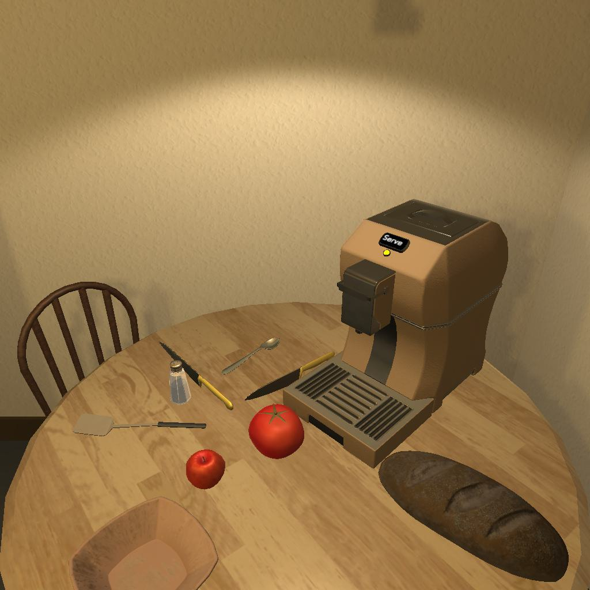
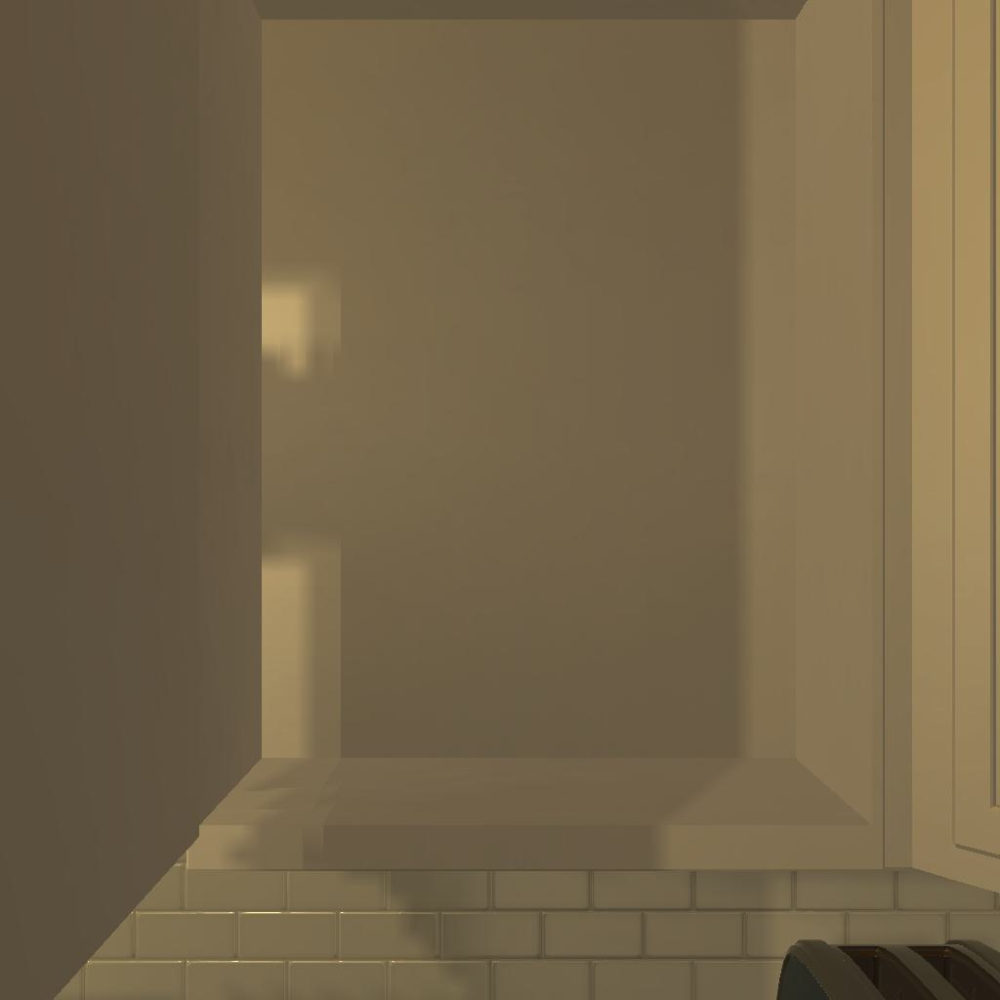

---------------------------------------------------------task: 10---------------------------------------------------------
--------------------------------------------------------------------------------------------------------------------------------------------------------------------
--------------------------------------------------------------------------------------------------------------------------------------------------------------------
Step:--------------------------------------------------------------------------9-------------------------------------------------------------------------------
----------------------------------------
VLM Prompt:
Image1:
Image2:
Image3:
**Instruction**
1. Analyze the provided images to identify all visible household objects and compare the difference between images (e.h. whether the object is opened or not and taken on hand or not), focusing on those relevant to the task description "clean some plate and put it in countertop."
2. Use the analysis of images and the task hint "The agent must find an object of the desired type, pick it up, go to a sink or a basin, clean the object with a sink or basin, and then find the correct location to place it and put it down there. The agent does not need to use soap bottle or faucet to clean the object, and the agent just needs to do action that is "clean the object with the sink or sink basin"." to answer the question: what is the most reasonable action in the choices for the task description "clean some plate and put it in countertop"?
3. Decide and write the answer using the template: The answer is: (i): , where i is the real number. If there is no desired object in images, search every place based on **Initial Observation** to find the object. And if no one is exactly correct, choose a similar answer.
**Initial Observation**
You are in the middle of a room. Looking quickly around you, you can see cabinet (1-20), toaster (1), microwave (1), garbagecan (1), countertop (1-2), drawer (1-4), stoveburner (1-4), sinkbasin (1), sink (1), fridge (1), diningtable (1), coffeemachine (1)
**Answer Choices**
(1): go to cabinet 2
(2): go to toaster 1
(3): go to cabinet 4
(4): go to cabinet 5
(5): go to microwave 1
(6): go to garbagecan 1
(7): go to countertop 1
(8): go to drawer 1
(9): go to cabinet 6
(10): go to cabinet 7
(11): go to drawer 2
(12): go to stoveburner 1
(13): go to stoveburner 2
(14): go to countertop 2
(15): go to cabinet 8
(16): go to cabinet 9
(17): go to cabinet 10
(18): go to drawer 3
(19): go to drawer 4
(20): go to stoveburner 3
(21): go to stoveburner 4
(22): go to cabinet 11
(23): go to cabinet 12
(24): go to cabinet 13
(25): go to cabinet 14
(26): go to sinkbasin 1
(27): go to sink 1
(28): go to cabinet 15
(29): go to fridge 1
(30): go to cabinet 16
(31): go to cabinet 17
(32): go to cabinet 18
(33): go to cabinet 19
(34): go to coffeemachine 1
(35): go to cabinet 20
(36): open cabinet 3
(37): close cabinet 3
(38): examine cabinet 3
**Answer**
Let's think step by step by following the instructions.
----------------------------------------
----------------------------------------
Original Response:
Image 1 shows a dining table with various items on it, including a coffeemaker, a spatula, a fork, a salt shaker, two apples, and a loaf of bread. There is no plate visible in this image. Image 2 and Image 3 appear to be identical, showing a close-up view of a wall and countertop with no visible objects.
According to the task description of "clean some plate and put it in countertop" and the initial observation, the most reasonable action would be to find a plate. Since no plate is visible in the provided images, we must search every place based on the initial observation to find a plate. The most likely locations for a plate would be in a cabinet or a drawer.
Reviewing the answer choices, the most reasonable action would be to go to a cabinet or drawer where a plate might be stored. Choices (1) to (35) involve going to various cabinets, drawers, and other appliances, but none of them specify an action to pick up a plate. Choice (36) involves opening a cabinet, which could potentially lead to finding a plate.
The answer is: (36): open cabinet 3
----------------------------------------
----------------------------------------
>>> Refine Original VLM Response and Get Pure Action: open cabinet 3
----------------------------------------
-----------------------------------------------------------------
Running time: 13.530380487442017 seconds
Total Money: 5.124330000000004
-----------------------------------------------------------------
-----------------------------------------------------------------
Text Observation:Nothing happens.
-----------------------------------------------------------------
UNSUCCEED